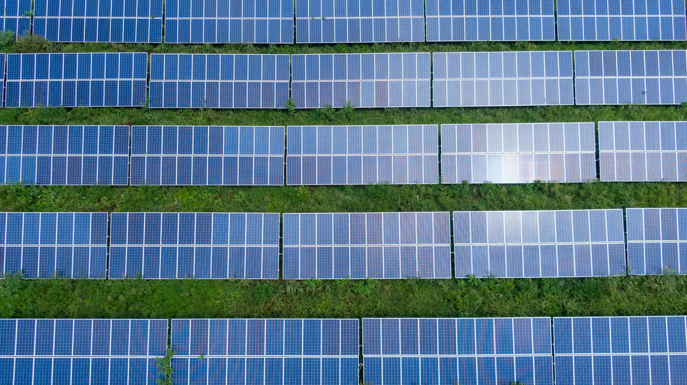
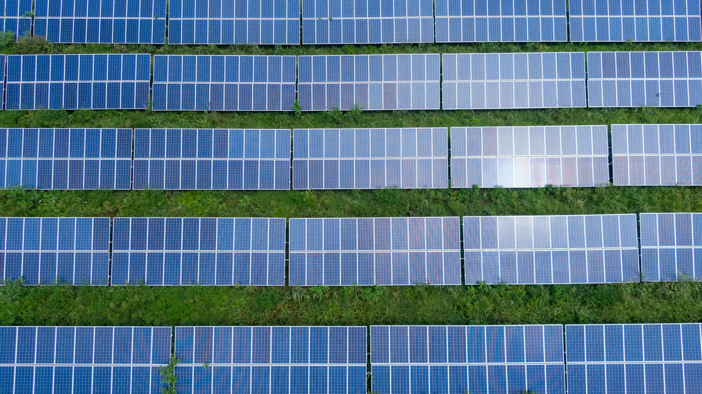
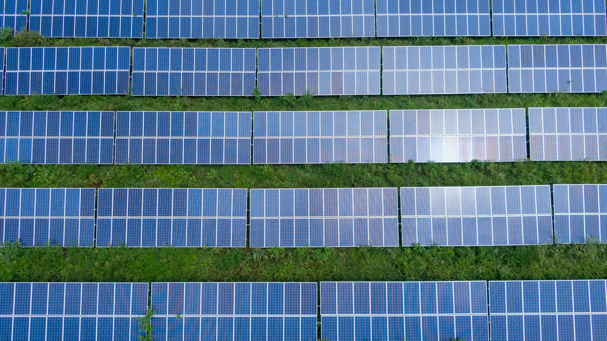
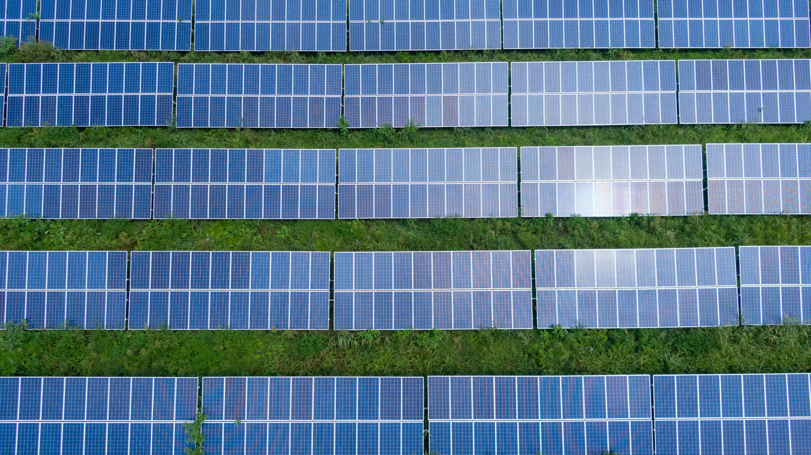

 

La dependencia global de los combustibles fósiles ha causado efectos devastadores en el medio ambiente, incrementando las emisiones de CO2 y la contaminación atmosférica. En Colombia, aunque el país cuenta con recursos naturales abundantes, su matriz energética sigue dependiendo en gran medida de fuentes no renovables, como el gas natural y el carbón. Esto no solo contribuye al cambio climático, sino que también genera una mayor vulnerabilidad económica frente a la fluctuación de los precios internacionales de estos combustibles. A nivel mundial, la necesidad de descarbonizar los sistemas energéticos se ha vuelto urgente para mitigar los efectos del cambio climático y mejorar la calidad del aire. En este contexto, las energías renovables, como la solar, se presentan como una solución clave; sin embargo, en Colombia, la adopción de la energía solar sigue siendo limitada, debido a varios factores como la falta de conocimiento, barreras regulatorias y los altos costos iniciales de implementación.
Los primeros pasos de la energía solar dieron paso en la ciudad de Santa Marta, donde se instalaron calentadores solares.
Universidades de Santander y Bogotá implementaron calentadores solares.
Se implementaron calentadores solares masivamente en ciudades como Medellín, Manizales y Bogotá.
Se aprueba la Ley 1715, que fomenta el uso de energías renovables, incluyendo la solar, en el sistema energético nacional.
Colombia ingresa a la Agencia Internacional de Energías Renovables.
Colombia realiza su primera subasta de energías renovables, impulsando el desarrollo de proyectos solares.
Se inaugura el parque solar El Paso en Cesar, el más grande en Colombia en su momento.
El gobierno establece metas de generación de electricidad a partir de energías renovables para 2030.
La transición energética es un proceso de cambio de una forma de producción de energía a otra, e incluye fuentes de energía renovables y no renovables. Entre los cambios se encuentra el reemplazo de combustibles fósiles, como el carbón y el petróleo, por fuentes renovables, como la energía solar y la eólica.
La transición de los combustibles fósiles a las fuentes renovables llevará tiempo, pero al final valdrá la pena porque es la clave para mitigar los impactos ambientales de fenómenos como el cambio climático y la contaminación del aire.
Para evitar los peores efectos del cambio climático, se deben reducir las emisiones de dióxido de carbono que contaminan el aire y generan, entre otros, el efecto invernadero y el aumento de la temperatura global. Con el Acuerdo de París se espera lograr este objetivo.
El acuerdo se basa en el principio de que todos los países deben tomar medidas contra el cambio climático y que los países desarrollados deben apoyar a los países en desarrollo, a través de la financiación y la transferencia de tecnología. Por ello, es necesario que todos los países inicien su transición hacia fuentes renovables, que eviten una catástrofe ambiental de dimensiones globales.
El sistema actual no tiene la capacidad de proporcionar suficiente energía; los combustibles fósiles son escasos y, además, finitos, por lo cual se están haciendo cada día más costosos.
Un nuevo sistema energético debe, no solo atender la demanda, sino también dejar de emitir CO2 a la atmósfera.
La transición energética es necesaria para reducir las emisiones contaminantes, para garantizar la seguridad del suministro y para mantener la competitividad en el mercado global.
La energía solar es una fuente de energía renovable que se obtiene de la radiación solar, aprovechando la energía del sol para generar electricidad y calor. Esta energía se puede convertir en electricidad mediante paneles fotovoltaicos, que utilizan células solares para transformar la luz solar en corriente eléctrica, o en calor a través de sistemas de calentadores solares, que calientan agua o aire para usos domésticos e industriales. La energía solar tiene múltiples aplicaciones, desde el suministro eléctrico en hogares y empresas hasta la calefacción de edificios, la producción de agua caliente y la carga de dispositivos portátiles. Los beneficios de la energía solar son numerosos: es inagotable y sostenible, ya que el sol es una fuente continua de energía, lo que significa que no se agota con el tiempo. En Colombia, la energía solar ha experimentado un notable crecimiento en los últimos años, impulsada por políticas y leyes que promueven el uso de energías renovables. Iniciativas como la Ley 1715 de 2014, que fomenta la integración de energías renovables no convencionales en el sistema energético nacional, han sido clave para el desarrollo de proyectos solares en el país, evidenciando el compromiso de Colombia con la sostenibilidad y la diversificación de su matriz energética.